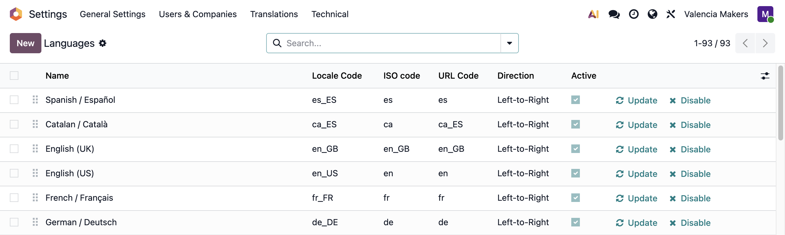
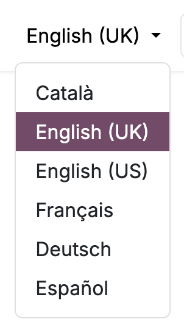
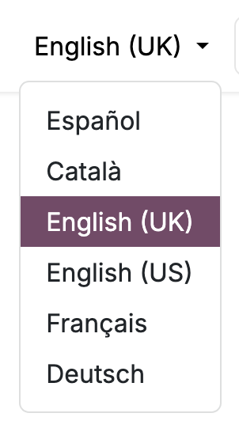

In standard Odoo, languages are always listed alphabetically by their English name, so a Valencia business's website offers Català, English, Français, Deutsch, Español, in that order. Language Sequence lets you drag your languages into the order you choose.
Standard

With Language Sequence

Drag languages into order on the Languages list, with the same handles Odoo uses elsewhere.
The website's language selector and the language lists in its footer follow your order.
The language dropdowns on users and contacts follow it too.
Nothing else changes; uninstall the module and the alphabetical order returns.
New languages you enable are added at the end of the list, and can be dragged into place. The Languages list is visible while the site is in developer mode.
This module requires the Website app, and works on both Community and Enterprise.